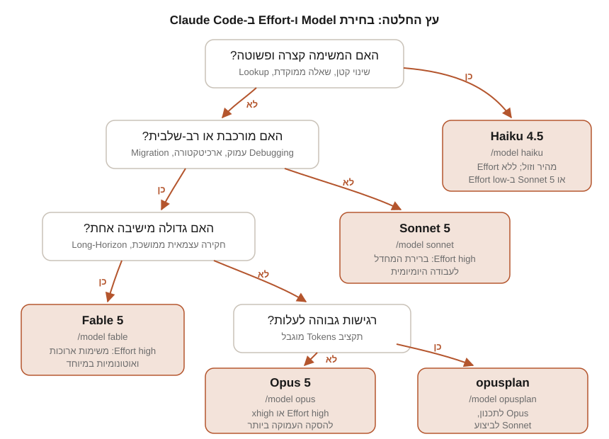

חלק ב | פרק 8
Claude Models ובחירת Model
כל משימה ב-Claude Code רצה על מודל Claude מסוים, והבחירה בו קובעת את איכות התוצאה, את המהירות ואת העלות. בפרק הזה נכיר את מערך המודלים הנוכחי (Fable 5, Opus 5, Sonnet 5, Haiku 4.5), את מנגנון ה-Effort וה-Adaptive Thinking, את Fast Mode, ואת כל הדרכים להחליף מודל בפועל: /model, הגדרות, דגלים ו-Fallback. חשוב להדגיש: פרק זה תלוי-גרסה במיוחד. כל העובדות, המחירים והסטטוסים בו אומתו מול התיעוד הרשמי בתאריך 28.07.2026, והם משתנים עם הזמן.
מחירים, מודלים זמינים וסטטוסים של יכולות מתעדכנים בתדירות גבוהה. כל המספרים בפרק הזה הם תמונת מצב מ-28.07.2026, לפי דפי התיעוד הרשמיים המפורטים בסוף הפרק. לפני החלטה תקציבית, בדקו את דף התמחור הרשמי בעצמכם.
מפת המודלים הנוכחית
נכון לתאריך האימות, דף ה-Models Overview הרשמי מונה חמישה מודלים נוכחיים. לכל מודל יש שם רשמי, Model ID ב-API, ו-Alias (כינוי קצר) ב-Claude Code. ה-Context Window הוא כמות ה-Tokens המקסימלית שהמודל יכול לקבל כקלט בבת אחת, וה-Max Output הוא גבול הפלט לתשובה אחת. המחירים נקובים בדולרים לכל מיליון Tokens (MTok):
| מודל | Model ID | Alias ב-Claude Code | Context Window | פלט מרבי | מחיר לכל MTok (קלט / פלט) | זמינות |
|---|---|---|---|---|---|---|
| Claude Fable 5 | claude-fable-5 | fable | מיליון Tokens | 128K | $10 / $50 | API, Bedrock, Google Cloud, Foundry |
| Claude Opus 5 | claude-opus-5 | opus | מיליון Tokens | 128K | $5 / $25 | API, Bedrock, Google Cloud, Foundry |
| Claude Sonnet 5 | claude-sonnet-5 | sonnet | מיליון Tokens | 128K | $3 / $15 (מחיר השקה: $2 / $10 עד 31.08.2026) | API, Bedrock, Google Cloud, Foundry |
| Claude Haiku 4.5 | claude-haiku-4-5-20251001 (כינוי: claude-haiku-4-5) | haiku | 200K | 64K | $1 / $5 | API, Bedrock, Google Cloud, Foundry |
| Claude Mythos 5 | claude-mythos-5 | אין Alias ייעודי | מיליון Tokens | 128K | $10 / $50 | זמינות מוגבלת, בהזמנה בלבד (Project Glasswing) |
כמה הערות חשובות על הטבלה:
- מחיר השקה ל-Sonnet 5. דף התמחור מציין במפורש: מחיר ההשקה של $2 לקלט ו-$10 לפלט לכל MTok בתוקף עד 31.08.2026, ומ-01.09.2026 ייכנס לתוקף המחיר הרגיל של $3 / $15. אם אתם קוראים את הפרק אחרי התאריך הזה, המחיר הנקוב בטבלה כבר אינו המבצע.
- Mythos 5 מיועד לפי התיעוד לתהליכי Cybersecurity הגנתיים במסגרת תוכנית בהזמנה בלבד. הוא אינו רלוונטי לרוב המשתמשים ואינו מופיע בהמשך הפרק.
- Aliases נוספים. מלבד הארבעה שבטבלה, Claude Code מכיר גם את
best(בוחר את Fable 5 כשהוא זמין לארגון, אחרת את ה-Opus העדכני), אתopusplan(מצב היברידי שנרחיב עליו בהמשך), אתdefault(ערך מיוחד שמחזיר את המודל המומלץ לסוג החשבון, לא Alias אמיתי), ואת הסיומת[1m]כמוopus[1m]להפעלת חלון של מיליון Tokens במקום שבו זה אינו אוטומטי. - דרישות גרסה. לפי התיעוד: Opus 5 דורש Claude Code בגרסה 2.1.219 ומעלה, Sonnet 5 דורש 2.1.197 ומעלה, ו-Fable 5 דורש 2.1.170 ומעלה. אם מודל חסר לכם ב-
/model, הריצוclaude update. - Model ID הוא צילום קבוע. התיעוד מציין שכל Model ID מוצמד לגרסה: מזהים עם תאריך (כמו
20251001) קבועים לאותה מהדורה, ובדורות שלפני 4.6 ה-Alias ב-API הוא מצביע נוחות למזהה מתוארך.
התיעוד של Claude Code מכנה כיום את פלטפורמת Google בשם Google Cloud's Agent Platform (דפי התיעוד עדיין יושבים תחת הנתיב google-vertex-ai). בכל אחת מהפלטפורמות החיצוניות, Amazon Bedrock, Google Cloud ו-Microsoft Foundry, המזהים הם ספציפיים לפלטפורמה (למשל Inference Profile ARN ב-Bedrock או שם Deployment ב-Foundry), ולכן איננו מפרטים אותם כאן. בדקו את דף ה-Models Overview לקבלת המזהה המדויק לפלטפורמה שלכם.
נספח: מודלים מדורות קודמים Legacy / Deprecated
המודלים הבאים אינם ברשימת המודלים הנוכחיים, אך דף התמחור עדיין מפרט אותם, וחלקם עדיין נגישים דרך ה-API ו-Claude Code (למשל דרך Fallback אוטומטי או הצמדת גרסה מפורשת). "Deprecated" פירושו שהוכרז תאריך פרישה; "Retired" פירושו שהמודל כבר אינו זמין. תאריכי הפרישה נלקחו מדף ה-Model Deprecations הרשמי:
| מודל | Model ID | מחיר לכל MTok (קלט / פלט) | סטטוס מתועד |
|---|---|---|---|
| Claude Opus 4.8 | claude-opus-4-8 | $5 / $25 | זמין; דור קודם. משמש כיעד Fallback של מסווגי בטיחות וכמודל Fast Mode |
| Claude Opus 4.7 | claude-opus-4-7 | $5 / $25 | זמין; דור קודם. תמיכת Fast Mode עבורו הוסרה ב-24.07.2026 |
| Claude Opus 4.6 | claude-opus-4-6 | $5 / $25 | זמין; דור קודם |
| Claude Opus 4.5 | לא צוין בדפים שנבדקו | $5 / $25 | זמין; דור קודם |
| Claude Sonnet 4.6 | claude-sonnet-4-6 | $3 / $15 | זמין; דור קודם. Extended Thinking עליו במעמד Deprecated |
| Claude Sonnet 4.5 | claude-sonnet-4-5-20250929 | $3 / $15 | זמין; דור קודם |
| Claude Opus 4.1 | claude-opus-4-1-20250805 | $15 / $75 | Deprecated מ-05.06.2026; פרישה: 05.08.2026. תחליף מומלץ: claude-opus-4-8 |
| Claude Haiku 3.5 | claude-3-5-haiku-20241022 | $0.80 / $4 | Retired ב-API מ-19.02.2026; לפי דף התמחור עדיין זמין ב-Bedrock וב-Google Cloud |
מודלים שכבר פרשו לחלוטין לפי דף ה-Deprecations: Claude Opus 4 ו-Claude Sonnet 4 (פרשו ב-15.06.2026), Claude Sonnet 3.7 (19.02.2026) ו-Claude Haiku 3 (20.04.2026). אם הצמדתם Model ID מתוארך בהגדרות או בסקריפטים, בדקו את הדף הזה מדי פעם: Claude Code מציג אזהרה כשמודל מבוקש נמצא במסלול פרישה.
פרופיל היכולות של כל מודל
ההשוואות בסעיף הזה מבוססות על התיאורים וההנחיות שבתיעוד הרשמי עצמו. במקומות שבהם התיעוד אינו קובע קביעה השוואתית מפורשת, נציג את הדברים כהכוונה כללית ולא כעובדה.
Claude Fable 5
לפי תיעוד Claude Code, Fable 5 הוא המודל היכול ביותר ב-Claude Code, והוא מתאים למשימות שגדולות מ"ישיבה אחת": הוא מחזיק Sessions אוטונומיים ארוכים, חוקר לפני שהוא פועל, ומאמת את העבודה של עצמו בתדירות גבוהה יותר ממודלים קטנים ממנו. דף ה-Overview מתאר אותו כאינטליגנציה מהדור הבא ל-Agents ארוכי-טווח. ה-Adaptive Thinking שלו פעיל תמיד ואי אפשר לכבותו. נקודת הידע (Knowledge Cutoff) שלו: ינואר 2026. הושק ב-09.06.2026.
- מתאים במיוחד ל: חקירות שורש-בעיה, Debugging של תקלות Production, החלטות ארכיטקטורה, ומשימות ארוכות שבדרך כלל הייתם מפרקים לחלקים. התיעוד ממליץ לתאר לו את התוצאה הרצויה ולא את הצעדים, ולוותר על תזכורות "תבדוק את עצמך": הוא עושה זאת בעצמו.
- פחות מתאים ל: משימות קטנות ויומיומיות. הוא המודל היקר ביותר ($10 / $50 לכל MTok), ואינו מודל ברירת המחדל באף סוג חשבון. בוחרים אותו במפורש עם
/model fable. - מגבלות מתועדות: אינו זמין תחת Zero Data Retention; בקשות שמסווגי הבטיחות שלו מסמנים (לרוב בתחומי Cybersecurity וביולוגיה) עוברות אוטומטית למודל אחר, כפי שנראה בסעיף ההחלפה; דורש Claude Code בגרסה 2.1.170 ומעלה.
Claude Opus 5
דף ה-Overview מתאר את Opus 5 במילים "למשימות Agentic Coding מורכבות ולעבודה ארגונית". נקודת הידע שלו היא המאוחרת ביותר במערך: מאי 2026. הוא מודל ברירת המחדל ב-Claude Code בחשבונות Max, Team Premium, Enterprise בתשלום לפי שימוש, וב-API. הוא תומך ב-Fast Mode וברמות ה-Effort הגבוהות xhigh ו-max (שבהן, לפי תיעוד ה-API, אי אפשר לכבות את החשיבה: ניסיון כזה מחזיר שגיאת 400).
- מתאים במיוחד ל: הסקה מורכבת רב-שלבית, החלטות ארכיטטורה ו-Debugging עמוק. דף ניהול העלויות מנסח זאת כך: שמרו את Opus להחלטות ארכיטקטוניות מורכבות ולהסקה רב-שלבית.
- פחות מתאים ל: עבודה שוטפת רגישת-עלות. באותו דף: Sonnet מטפל היטב ברוב משימות הקוד ועולה פחות מ-Opus.
- מגבלות מתועדות: בקשות שמסומנות על ידי מסווג ה-Cybersecurity עוברות ל-Opus 4.8; בקשות שמסומנות על ידי מסווג הביולוגיה מסתיימות בסירוב (ל-Opus 5 אין מודל Fallback לביולוגיה). דורש Claude Code בגרסה 2.1.219 ומעלה.
Claude Sonnet 5
התיאור הרשמי: השילוב הטוב ביותר של מהירות ואינטליגנציה. זהו מודל ברירת המחדל ב-Claude Code בחשבונות Pro, Team Standard ומושבי מנוי Enterprise, וסביר שזה המודל שרוב הקוראים עובדים איתו רוב הזמן. ב-Anthropic API הוא רץ תמיד עם חלון של מיליון Tokens: אין לו גרסת 200K, ו-Claude Code מבצע Auto-Compact כברירת מחדל בסביבות 967K. נקודת ידע: ינואר 2026.
- מתאים במיוחד ל: העבודה היומיומית: כתיבת קוד, Tests, Refactoring מוגדר-היקף ותיקוני Bugs שגרתיים. דף העלויות ממליץ עליו גם כמודל לחברי Agent Teams ו-Subagents שדורשים יכולת מלאה.
- פחות מתאים ל: לפי חלוקת התפקידים שבתיעוד, את ההסקה העמוקה ביותר ואת המשימות הארוכות במיוחד עדיף להפנות ל-Opus או ל-Fable. זו הכוונה כללית: התיעוד אינו מפרסם השוואת Benchmarks ישירה בין המודלים בדפים שנבדקו.
- שווה לדעת: מחיר ההשקה ($2 / $10) בתוקף עד 31.08.2026; דורש Claude Code בגרסה 2.1.197 ומעלה.
Claude Haiku 4.5
התיאור הרשמי: המודל המהיר ביותר עם אינטליגנציה קרובת-חזית. הוא הזול במערך ($1 / $5 לכל MTok), עם חלון של 200K ופלט מרבי של 64K. חשוב: הוא המודל הנוכחי היחיד שאינו תומך ב-Adaptive Thinking וברמות Effort; הוא עדיין משתמש במנגנון ה-Extended Thinking הידני. נקודות הידע שלו מוקדמות מהאחרים: פברואר 2025 (אמין) ויולי 2025 (נתוני אימון).
- מתאים במיוחד ל: משימות פשוטות, לפי טבלת ה-Aliases הרשמית; התיעוד ממליץ עליו ל-Subagents פשוטים (
model: haiku) והוא משמש גם לפונקציונליות רקע של Claude Code. - פחות מתאים ל: משימות שהתיעוד משייך למודלים הגדולים: הסקה רב-שלבית, ארכיטקטורה ומשימות ארוכות. גם כאן זו הכוונה כללית שנגזרת ממיצוב המודל בתיעוד.
- שווה לדעת: בהגבלות מודלים ארגוניות, מודלי Haiku זמינים תמיד ואי אפשר לחסום אותם, כך שלכל חבר ארגון נשאר לפחות מודל אחד שמיש.
Effort ו-Adaptive Thinking
בדורות הקודמים, "חשיבה" של המודל נשלטה על ידי Extended Thinking: מצב שבו מקצים למודל תקציב Tokens קבוע להסקה פנימית (budget_tokens). המנגנון הזה נמצא בתהליך החלפה: לפי תיעוד ה-API, Extended Thinking הוגדר Deprecated במודלי 4.6 (בקשות עדיין עוברות), ובמודלי 4.7 ואילך הוא אינו נתמך כלל ובקשות שמשתמשות בו נדחות עם שגיאת 400. במקומו הגיע Adaptive Thinking: המודל מחליט בעצמו, בכל צעד, אם לחשוב וכמה, לפי מורכבות המשימה. מבין המודלים הנוכחיים, רק Haiku 4.5 עדיין עובד עם Extended Thinking ידני; Fable 5, Opus 5 ו-Sonnet 5 הם Adaptive בלבד.
הידית שבה אתם שולטים על Adaptive Thinking היא פרמטר ה-Effort. תיעוד ה-API מנסח זאת במדויק: Effort הוא איתות התנהגותי, לא תקציב Tokens נוקשה. ברמה נמוכה המודל עדיין יחשוב על בעיות קשות מספיק, אבל פחות משהיה חושב ברמה גבוהה. חשוב להבין ש-Effort משפיע על כל ה-Tokens בתשובה: טקסט, קריאות לכלים וחשיבה, לא רק על בלוקי החשיבה.
רמות ה-Effort ב-Claude Code
אלו הרמות לפי תיעוד ה-Model Configuration של Claude Code. מודלים שאינם מופיעים בטבלת התמיכה אינם תומכים ב-Effort כלל (ובהם Haiku 4.5):
| רמה | מתי להשתמש | הערות |
|---|---|---|
low | משימות קצרות, תחומות ורגישות-זמן שאינן דורשות אינטליגנציה גבוהה | החיסכון הגדול ביותר ב-Tokens |
medium | עבודה רגישת-עלות שמוכנה לוותר על מעט יכולת | לפי תיעוד ה-API, ב-Sonnet 5 רמה זו משתווה בערך ל-Sonnet 4.6 ברמת high |
high | ברירת המחדל: איזון בין Tokens לאינטליגנציה | ברירת המחדל בכל המודלים התומכים, חוץ מ-Opus 4.7 שבו ברירת המחדל היא xhigh |
xhigh | הסקה עמוקה יותר בעלות Tokens גבוהה יותר; תיעוד ה-API מייעד אותה למשימות ארוכות במיוחד | נתמכת ב-Fable 5, Opus 5, Sonnet 5, Opus 4.8 ו-Opus 4.7 |
max | משימות תובעניות במיוחד | התיעוד מזהיר: תשואה פוחתת ונטייה לחשיבת-יתר. תקפה ל-Session הנוכחי בלבד |
ultracode | משימות מהותיות שמצדיקות תכנון Workflow דינמי | הגדרה של Claude Code, לא רמת מודל: שולחת xhigh ומוסיפה תזמור Workflows. ל-Session הנוכחי בלבד |
תמיכה לפי מודל: Fable 5, Opus 5, Sonnet 5, Opus 4.8 ו-Opus 4.7 תומכים בכל הרמות low עד max; Opus 4.6 ו-Sonnet 4.6 תומכים ב-low, medium, high ו-max בלבד. אם תבחרו רמה שהמודל אינו תומך בה, Claude Code יורד לרמה הנתמכת הגבוהה ביותר שמתחתיה (למשל xhigh על Opus 4.6 רץ כ-high). בצד ה-API, פרמטר ה-Effort נשלח דרך output_config ונתמך גם במודלים נוספים, ובהם Mythos 5 ו-Mythos Preview. סולם ה-Effort מכויל לכל מודל בנפרד: אותה רמה אינה מייצגת אותו ערך פנימי בין מודלים.
כך קובעים Effort בפועל
/effortבלי ארגומנט פותח Slider אינטראקטיבי;/effort xhighקובע רמה ישירות;/effort autoחוזר לברירת המחדל של המודל.- בתוך בורר
/model, חיצי ימין ושמאל מכווננים את ה-Slider של ה-Effort למודל הנבחר. - דגל
--effortבהפעלה קובע רמה ל-Session בודד, למשלclaude --effort medium. - משתנה הסביבה
CLAUDE_CODE_EFFORT_LEVELגובר על כל שאר הדרכים. - השדה
effortLevelבקובץ ההגדרות מקבלlow,medium,highאוxhigh(לאmaxולאultracode, שהם ל-Session בלבד). - שדה
effortב-Frontmatter של Skill או Subagent עוקף את רמת ה-Session כשהם פעילים. - המילה
ultrathinkבכל מקום ב-Prompt מבקשת הסקה עמוקה יותר לאותו תור בלבד, בלי לשנות את הגדרת ה-Session. ביטויים כמו "think hard" אינם מזוהים כמילת מפתח ועוברים כטקסט רגיל.
הרמות low, medium, high ו-xhigh שנקבעות ב-Session אינטראקטיבי נשמרות בין Sessions. הרמה הפעילה מוצגת בכותרת ה-Session ליד שם המודל (למשל "with low effort"), כך שתמיד אפשר לוודא מה פעיל. בארגוני Enterprise, מנהלים יכולים להגדיר תקרת Effort לכל מודל ולכל תפקיד; בחירת רמה גבוהה מהתקרה רצה ברמת התקרה עם אזהרה.
שליטה בתצוגת החשיבה
בנפרד מרמת ה-Effort, Claude Code מציע מתגים לחשיבה עצמה: קיצור המקלדת Option+T ב-macOS או Alt+T ב-Windows וב-Linux מדליק ומכבה את מצב החשיבה ל-Session הנוכחי, ו-/config קובע ברירת מחדל גלובלית (נשמרת כ-alwaysThinkingEnabled בקובץ ~/.claude/settings.json). פלט החשיבה מקופל כברירת מחדל; Ctrl+O עובר למצב מפורט. שימו לב לשתי נקודות מהתיעוד: ב-Fable 5 אי אפשר לכבות את החשיבה בשום דרך, ואתם מחויבים על כל Tokens החשיבה שנוצרו גם כשהם מקופלים או מוסתרים.
רמת Effort נמוכה יותר פירושה פחות Tokens, תגובה מהירה יותר ועלות נמוכה יותר; רמה גבוהה יותר קונה עומק תמורת Tokens וזמן. עוד המלצה רשמית שחוסכת כסף: שמרו על רמת Effort קבועה לאורך שיחה. שינוי Effort בין בקשות מבטל את ה-Prompt Caching, והבקשה הבאה תעבד מחדש את כל ההקשר במחיר מלא.
Fast Mode Research Preview
Fast Mode הוא תצורה מהירה של Opus: לפי התיעוד, עד פי 2.5 מהיר יותר, במחיר גבוה יותר לכל Token. זה אינו מודל אחר: אותו Opus, אותה איכות, תצורת API שמעדיפה מהירות על חסכוניות. הפיצ'ר נמצא ב-Research Preview, כלומר היכולת, התמחור והזמינות עשויים להשתנות.
- מודלים נתמכים: Opus 5 ו-Opus 4.8 בלבד. אין Fast Mode ב-Sonnet או ב-Haiku. התמיכה ב-Opus 4.7 הוגדרה Deprecated ב-25.06.2026 והוסרה ב-24.07.2026. מגרסה 2.1.219, מודל ברירת המחדל של Fast Mode הוא Opus 5.
- תמחור: $10 קלט / $50 פלט לכל MTok בשני המודלים, אחיד לכל אורך חלון המיליון (לעומת $5 / $25 במצב רגיל, לפי דף התמחור).
- הפעלה: הפקודה
/fastב-CLI מדליקה ומכבה (והרצה חוזרת שלה גם מדווחת על המצב), או"fastMode": trueבקובץ הגדרות המשתמש. אם אתם על מודל אחר, Claude Code עובר אוטומטית ל-Opus. כשהמצב פעיל מופיע סימן ↯ ליד שורת ההקלדה והודעת "Fast mode ON". כיבוי משאיר אתכם על Opus, בלי חזרה למודל הקודם. Fast Mode אינו נתמך בהרחבת VS Code. - דרישות: זמין דרך ה-Anthropic API (Console) ולמנויי Pro/Max/Team/Enterprise באמצעות Usage Credits בלבד: הצריכה מחויבת מקרדיט השימוש מה-Token הראשון ואינה נכללת במגבלות המנוי. אינו זמין ב-Bedrock, ב-Google Cloud, ב-Foundry וב-Claude Platform on AWS. בארגוני Team ו-Enterprise הוא כבוי כברירת מחדל עד ש-Owner מפעיל אותו, ואפשר לחסום אותו לגמרי עם
CLAUDE_CODE_DISABLE_FAST_MODE=1. - מגבלות קצב: ל-Fast Mode מאגר מגבלות נפרד מ-Opus רגיל, וכל מודלי ה-Opus הנתמכים חולקים מאגר Fast Mode אחד. כשנתקלים במגבלה או כשנגמר הקרדיט: חזרה אוטומטית למהירות רגילה, הסימן ↯ מאפיר, וכשההשהיה מסתיימת Fast Mode חוזר להידלק לבד.
- שליטה ארגונית: ההגדרה
fastModePerSessionOptIn: trueגורמת לכל Session להתחיל עם Fast Mode כבוי ולדרוש הפעלה מפורשת, מנגנון שהתיעוד ממליץ עליו לבקרת עלויות בארגונים.
בפעם הראשונה שמדליקים Fast Mode בשיחה, משלמים את מחיר הקלט המלא (ללא Cache) של Fast Mode על כל ההקשר הקיים. ככל שהשיחה עמוקה יותר, זה יקר יותר. לכן ההמלצה הרשמית: הדליקו Fast Mode בתחילת Session ולא באמצעו. החיוב הזה חל פעם אחת לשיחה, כך שכיבוי והדלקה חוזרת אינם חוזרים עליו.
ההבדל בין Fast Mode לבין הורדת Effort: Fast Mode שומר על אותה איכות מודל ומוריד את זמן התגובה תמורת מחיר גבוה יותר; Effort נמוך מוריד את כמות החשיבה, מהיר יותר וזול יותר, אך עלול לפגוע באיכות במשימות מורכבות. התיעוד מציין שאפשר לשלב: Fast Mode עם Effort נמוך למהירות מרבית במשימות פשוטות.
בחירת מודל למשימה
עכשיו, כשאנחנו מכירים את השחקנים, נבנה שיטת החלטה. העיקרון המרכזי מדף ניהול העלויות: התאימו את המודל למשימה. Sonnet מטפל היטב ברוב משימות הקוד; את Opus שומרים להחלטות מורכבות; את Fable למשימות שגדולות מישיבה אחת; ואת Haiku למשימות הפשוטות ולתפקידי עזר.

/model המתאימה; את ה-Effort מכווננים עם /effort.והנה מטריצת שימוש מפורטת יותר לתרחישים נפוצים. ההמלצות נגזרות מההכוונה הרשמית שצוטטה לעיל, אך ההצמדה המדויקת של רמת Effort לתרחיש היא שיקול דעת מערכתי שלנו, לא קביעה של התיעוד:
| תרחיש | מודל מומלץ | Effort | נימוק |
|---|---|---|---|
| שינוי קטן וממוקד (תיקון Typo, עדכון Config) | Haiku 4.5, או Sonnet 5 | אין ב-Haiku; low ב-Sonnet | משימה פשוטה לפי הגדרת ה-Alias הרשמית; אין הצדקה לעלות של מודל גדול |
| כתיבת Tests למודול קיים | Sonnet 5 | high | עבודה יומיומית מובהקת; לולאת כתיבה-הרצה-תיקון זולה ומהירה |
| Debugging מורכב (תקלה לא עקבית, רב-רכיבים) | Opus 5; אם החקירה ממושכת ועצמאית: Fable 5 | high | התיעוד שומר ל-Opus הסקה רב-שלבית, ומייעד את Fable לחקירות שורש ותקלות Production |
| Architecture Review | Opus 5 | high או xhigh | החלטות ארכיטקטוניות מורכבות הן הדוגמה המפורשת של התיעוד לשימוש ב-Opus |
| Refactoring רחב אך מוגדר היטב | Sonnet 5 | high | היקף גדול אינו מורכבות; כשהתוכנית ברורה, Sonnet מבצע היטב ובזול |
| Migration ארוכה ורב-שלבית | Fable 5, או Opus 5 | high ב-Fable; xhigh ב-Opus | משימה שגדולה מישיבה אחת; תיעוד ה-API מייעד את xhigh לעבודה ארוכת-טווח |
| Security Review | Opus 5 | high | הסקה עמוקה נדרשת; שימו לב שתוכן Cybersecurity עלול להפעיל את מסווגי הבטיחות ולהעביר את הבקשה ל-Opus 4.8 (התנהגות מתועדת וצפויה) |
| Feature חדש על פני כמה קבצים | Sonnet 5; לתכנון מורכב: opusplan | high | ביצוע רב-קבצים הוא חוזק יומיומי של Sonnet; opusplan קונה תכנון ברמת Opus במחיר ביצוע של Sonnet |
החלפת מודלים ב-Claude Code
יש ארבע דרכים לקבוע מודל, לפי סדר העדיפויות שבתיעוד:
- בתוך Session:
/model <alias או שם>מחליף מיד, ו-/modelבלי ארגומנט פותח בורר. מאז גרסה 2.1.153, בחירה בבורר עם Enter נשמרת כברירת המחדל שלכם (בכתיבת השדהmodelלהגדרות המשתמש), ומקש s מחליף ל-Session הנוכחי בלבד. הבורר מבקש אישור כשיש כבר פלט בשיחה, כי התשובה הבאה תקרא מחדש את כל ההיסטוריה ללא Cache. - בהפעלה:
claude --model <alias או שם>, תקף ל-Session שהופעל איתו בלבד. שימושי להרצת מודלים שונים בטרמינלים שונים במקביל. - משתנה סביבה:
ANTHROPIC_MODEL, גם הוא ל-Session הנוכחי. - הגדרות: השדה
modelבקובץ ההגדרות, לקביעה קבועה.
{
"model": "opus",
"fallbackModel": ["claude-sonnet-5", "claude-haiku-4-5"]
}לבדיקה איזה מודל פעיל כרגע: /status, או שורת הסטטוס אם הגדרתם אחת. שימו לב ש-Sessions שמשוחזרים עם --resume או --continue שומרים על המודל שאיתו נשמרו, ולא על ההגדרה הנוכחית.
Fallback: כשהמודל הראשי אינו זמין
כשהמודל הראשי עמוס או לא זמין (שגיאת שרת שאינה ניתנת לניסיון חוזר), Claude Code יכול לעבור למודל גיבוי במקום להיכשל. מגדירים שרשרת עם הדגל --fallback-model שמקבל רשימה מופרדת בפסיקים, למשל claude --fallback-model sonnet,haiku, או עם השדה fallbackModel בהגדרות (מערך, כמו בדוגמה למעלה). הדגל גובר על ההגדרה. השרשרת מוגבלת לשלושה מודלים אחרי הסרת כפילויות, והמעבר תקף לתור הנוכחי בלבד: ההודעה הבאה תנסה שוב את המודל הראשי. שגיאות אימות, חיוב ומגבלות קצב אינן מפעילות Fallback. שימו לב: Claude Code אינו מציג את השרשרת ב-/status; הסימן הראשון לקיומה הוא ההודעה בעת מעבר.
נפרד מכך קיים Fallback אוטומטי מבוסס תוכן: Fable 5 ו-Opus 5 רצים עם מסווגי בטיחות לתחומי Cybersecurity וביולוגיה. בקשה שסומנה רצה מחדש אוטומטית על מודל היעד (למשל Cybersecurity מ-Fable 5 או מ-Opus 5 עובר ל-Opus 4.8) עם הודעה בשיחה, וה-Session ממשיך על מודל היעד עד שתריצו /model. עבודה בתחומים האלה (בדיקות חדירות, CTF) צפויה להיתקל בזה תדיר; זה ניתוב מתועד, לא דגל על החשבון.
opusplan: תכנון ב-Opus, ביצוע ב-Sonnet
ה-Alias opusplan הוא גישה היברידית אוטומטית: ב-Plan Mode (פרק 7) הוא משתמש ב-opus להסקה ולהחלטות ארכיטקטורה, וכשעוברים לביצוע הוא מחליף אוטומטית ל-sonnet לכתיבת הקוד. כך מקבלים תכנון ברמת Opus במחיר ביצוע של Sonnet. שלב התכנון משתמש באותו Context Window כמו הגדרת opus, ובתוכניות מנוי שבהן Opus משודרג אוטומטית למיליון Tokens, גם שלב התכנון של opusplan מקבל את השדרוג. לאכיפת מיליון בשני השלבים קיים opusplan[1m]. מפעילים כרגיל: /model opusplan.
availableModels: הגבלת בחירה בארגון
מנהלי מערכת יכולים להגביל אילו מודלים משתמשים רשאים לבחור באמצעות השדה availableModels בהגדרות מנוהלות. הרשימה מקבלת משפחת מודל (כמו sonnet), קידומת גרסה (כמו claude-sonnet-4-5) או Model ID מלא, והיא נאכפת בכל מקום שבו נבחר מודל: /model, הדגלים, משתני הסביבה, מודלים של Subagents, Skills ועוד. מודלים שהוחרגו מוסתרים מהבורר, ו-Alias משפחתי כמו opus נפתר לגרסה החדשה ביותר של המשפחה שהרשימה מתירה:
{
"availableModels": ["sonnet", "haiku"],
"enforceAvailableModels": true
}נקודה שחשוב לדייק בה: availableModels לבדו אינו מגביל את אפשרות ה-Default בבורר. כדי שגם היא תציית לרשימה יש להוסיף enforceAvailableModels: true (דורש גרסה 2.1.175 ומעלה). וההגדרה model היא בחירה התחלתית, לא אכיפה: משתמש תמיד יכול לפתוח /model ולבחור אחרת, אלא אם הרשימה מונעת זאת. בארגוני Enterprise קיימת גם שכבת הגבלה נפרדת מקונסולת הניהול של claude.ai, שנאכפת בצד השרת.
לאן ה-Aliases מצביעים בכל Provider
ה-Alias אינו מצביע לאותו מודל בכל פלטפורמה. נכון לתאריך האימות:
| Provider | opus | sonnet | מודל ה-default לחשבון |
|---|---|---|---|
| Anthropic API | Opus 5 | Sonnet 5 | Opus 5 (ב-API, Max, Team Premium, Enterprise לפי שימוש); Sonnet 5 (Pro, Team Standard, מושבי Enterprise) |
| Claude Platform on AWS | Opus 5 | Sonnet 4.6 | Opus 5 |
| Amazon Bedrock / Google Cloud Agent Platform | Opus 5 | Sonnet 4.5 | Opus 5 |
| Microsoft Foundry | Opus 4.6 | Sonnet 4.5 | Sonnet 4.5 |
כשה-Alias נפתר למודל ישן יותר, אפשר לבחור מודל חדש בשמו המלא או להצמיד גרסה עם משתני הסביבה ANTHROPIC_DEFAULT_OPUS_MODEL, ANTHROPIC_DEFAULT_SONNET_MODEL, ANTHROPIC_DEFAULT_HAIKU_MODEL ו-ANTHROPIC_DEFAULT_FABLE_MODEL. התיעוד ממליץ בחום להצמיד גרסאות בפריסות ארגוניות על פלטפורמות צד שלישי, כדי שאתם תשלטו מתי המשתמשים עוברים למודל חדש. Fable 5 אינו מודל ברירת מחדל באף סוג חשבון: עוברים אליו רק בבחירה מפורשת.
אימות: אחרי שקבעתם מודל ו-Effort, ודאו שהם באמת פעילים:
/statusמציג את המודל הנוכחי ואת פרטי החשבון.- כותרת ה-Session מציגה את רמת ה-Effort ליד שם המודל (למשל "with low effort").
- אם הפעלתם Fast Mode, הסימן ↯ מופיע ליד שורת ההקלדה, ו-
/fastמדווח על המצב.
שיקולי עלות
בחירת המודל היא ידית העלות הגדולה ביותר שיש לכם: פער של פי 10 בין Haiku 4.5 ($1 / $5) ל-Fable 5 ($10 / $50) על כל MTok. כמה מספרים ועובדות מדף ניהול העלויות הרשמי, נכון לתאריך האימות:
- בפריסות ארגוניות, העלות הממוצעת היא בסביבות $13 למפתח ליום פעיל, ו-$150 עד $250 למפתח לחודש, כאשר אצל 90% מהמשתמשים העלות נשארת מתחת ל-$30 ליום פעיל.
/usageמציג את צריכת ה-Tokens של ה-Session הנוכחי ואת ניצול מגבלות התוכנית. שימו לב: הסכום הדולרי מחושב מקומית לפי מחירי המחירון הרגילים, ואינו משקף מחירי מבצע (כמו מבצע ההשקה של Sonnet 5) או הנחות חוזיות.- תהליכי רקע (כמו סיכום שיחות עבור
--resume) צורכים Tokens גם בלי אינטראקציה, בדרך כלל פחות מ-$0.04 ל-Session. - Prompt Caching פועל אוטומטית: קריאת Cache עולה 10% ממחיר הקלט הרגיל. אורך חיי ה-Cache הוא שעה במנוי, ויורד לחמש דקות כשעוברים ל-Usage Credits או עובדים עם מפתח API. הפסקה ארוכה מאורך החיים גוררת עיבוד מלא מחדש של ההקשר.
- חלון המיליון מתומחר במחיר הרגיל, בלי תוספת על Tokens מעבר ל-200K, במודלי 4.6 ואילך.
שלוש ההרגלים שהתיעוד מדגיש כבעלי ההשפעה הגדולה ביותר: ניקוי הקשר בין משימות לא קשורות (/clear), התאמת המודל למשימה במקום להשאיר את Opus כברירת מחדל קבועה, ורמת Effort מותאמת. את ניהול ה-Context המלא נלמד בפרק ייעודי בהמשך המדריך.
שגיאות נפוצות
- המודל הגדול ביותר לכל דבר. הטעות הקלאסית: לקבוע את Opus או Fable כברירת מחדל קבועה "כדי לקבל את הטוב ביותר". דף העלויות מציין במפורש שהוצאה גבוהה במפתיע מתחילה לרוב מ-Sessions ארוכים שלא נוקו ומ-Opus שנשאר כברירת מחדל. Sonnet 5 מטפל היטב ברוב משימות הקוד.
- הנחה שה-Alias זהה בכל מקום.
sonnetהוא Sonnet 5 ב-API אבל Sonnet 4.5 ב-Bedrock וב-Foundry נכון לתאריך האימות. בפריסות ארגוניות, הצמידו גרסאות. - הרצת
/effortעל Haiku. Haiku 4.5 אינו תומך ב-Effort. הרמות חלות רק על המודלים שבטבלת התמיכה. - שינוי Effort באמצע שיחה ארוכה. מבטל את ה-Prompt Caching ומייקר את הבקשה הבאה משמעותית. קבעו רמה בתחילת השיחה.
- הדלקת Fast Mode עמוק בתוך שיחה. משלמים מחיר קלט מלא ללא Cache על כל ההקשר הקיים. הדליקו בתחילת Session.
- החלפת מודל כדי "לאפס" מגבלת שימוש. מגבלות ה-Session והמגבלה השבועית במנויים משותפות לכל המודלים, כך שהחלפה אינה מחזירה גישה. היוצא מן הכלל: הודעת "הגעת למגבלת ה-Opus" הספציפית, שאחריה מעבר ל-Sonnet כן מאפשר להמשיך לעבוד.
- ציטוט מחירים מהזיכרון. מחירי השקה (כמו של Sonnet 5) פגים בתאריך נקוב, ומודלים עוברים Deprecation. כל החלטת עלות מתחילה בדף התמחור העדכני.
Troubleshooting
| תסמין | סיבה סבירה | פתרון |
|---|---|---|
מודל אינו מופיע ב-/model (למשל Fable 5 או Opus 5) | גרסת Claude Code ישנה (Fable 5 דורש 2.1.170+, Opus 5 דורש 2.1.219+), Zero Data Retention, או שהשרת טרם דיווח על זמינות לארגון | הריצו claude update; נסו /model fable ישירות (הבדיקה מול השרת יכולה להצליח לפני שהבורר מציג את השורה); בדקו הגבלות ארגוניות |
| Model "<name>" is restricted by your organization's settings | הגבלת מודלים ארגונית מקונסולת הניהול או availableModels | בחרו מודל מותר עם /model, או פנו למנהל המערכת |
| הודעת "הגעת למגבלת Session / מגבלה שבועית" | חלון שימוש של המנוי, משותף לכל המודלים | ההודעה מציגה מתי החלון מתאפס; /usage-credits מאפשר להמשיך מעבר למכסה אם הקרדיטים מופעלים |
| הודעת "הגעת למגבלת ה-Opus" | מכסת Opus ספציפית נגמרה | עברו ל-Sonnet עם /model sonnet והמשיכו לעבוד |
בחרתם xhigh אך המערכת רצה ב-high | המודל הפעיל אינו תומך ברמה (למשל Opus 4.6), או תקרת Effort ארגונית | בדקו את כותרת ה-Session; עברו למודל תומך או קבלו את התקרה |
| Fast mode has been disabled by your organization | Owner לא הפעיל את הפיצ'ר בארגון, או ש-Proxy מיירט את בדיקת הזמינות | בקשו מ-Owner להפעיל; בסביבות Gateway עיינו בסעיף ה-Proxy בתיעוד Fast Mode |
| המודל הראשי עמוס ובקשות נכשלות | עומס זמני בצד השרת | הגדירו שרשרת גיבוי: claude --fallback-model sonnet,haiku או fallbackModel בהגדרות |
| There's an issue with the selected model | שגיאת הקלדה ב---model, ב-ANTHROPIC_MODEL או בשדה model | תקנו את השם; ערכים אלה אינם עוברים בדיקת זיהוי מוקדמת, והשגיאה מופיעה רק בבקשה הראשונה |
| ה-Session עבר לבד למודל אחר באמצע עבודה | Fallback של מסווגי בטיחות (תוכן Cybersecurity או ביולוגיה), או Fallback זמינות | קראו את ההודעה בשיחה; חזרו למודל הרצוי עם /model. אפשר לעבור לאישור ידני דרך /config |
Best Practices
- עבדו עם Sonnet 5 ברירת מחדל ו-Effort ברמת high, והסלימו במודע: Opus להחלטות מורכבות, Fable למשימות ארוכות ואוטונומיות, Haiku לפשוטות.
- השתמשו ב-
opusplanכשאתם רוצים תכנון עמוק בלי לשלם מחיר Opus על כל הביצוע. - קבעו Effort בתחילת שיחה ושמרו עליו קבוע לאורכה, כדי לא לשבור את ה-Prompt Caching.
- הגדירו שרשרת
fallbackModelכדי שעומס שרת לא יעצור אתכם. - בצוותים: הגדירו
availableModelsעםenforceAvailableModels, והצמידו גרסאות עם משתניANTHROPIC_DEFAULT_*_MODELבפלטפורמות צד שלישי. - בדקו את
/usageבאופן שוטף, והצליבו החלטות תקציב מול דף התמחור הרשמי בתאריך ההחלטה. - ל-Subagents פשוטים, קבעו
model: haikuבהגדרת ה-Subagent.
Anti-patterns
- Opus או Fable בכל אוטומציה. ב-CI/CD וב-Batch, שבהם אין אדם שממתין לתשובה, מהירות פחות חשובה ועלות מצטברת מהר. גם Fast Mode מוגדר בתיעוד כלא מתאים לתרחישים אלה.
- שימוש בהגדרת
modelכאילו היא אכיפה. היא רק בחירה התחלתית; משתמש יכול לעבור מודל. אכיפה אמיתית דורשתavailableModelsו-enforceAvailableModels. - Effort ברמת max כקבוע. התיעוד מזהיר מתשואה פוחתת ומחשיבת-יתר, והרמה ממילא אינה נשמרת בין Sessions. השתמשו בה נקודתית ובדקו אם היא באמת משפרת.
- הצמדת Model ID מתוארך ושכחתו. מודלים מוצמדים פורשים (ראו את Opus 4.1). עקבו אחרי דף ה-Deprecations ואחרי אזהרות הפרישה של Claude Code.
- Fast Mode כפתרון לאיכות. Fast Mode אינו משנה את איכות המודל, רק את המהירות והמחיר. אם התוצאות אינן טובות מספיק, הבעיה היא במודל, ב-Effort או ב-Prompt, לא במהירות.
תרגיל
לכל אחד מהתרחישים הבאים בפרויקט TaskFlow, בחרו מודל, רמת Effort (אם רלוונטית) והאם להפעיל Fast Mode. נמקו כל בחירה בעובדה או הנחיה מהתיעוד שהופיעה בפרק:
- תיקון שגיאת כתיב בהודעה למשתמש בקובץ
frontend/src/components/TaskList.tsx. - כתיבת חבילת Unit Tests מלאה ל-Endpoint של יצירת משימות ב-Backend.
- תקלה לא עקבית ב-Production: משימות נעלמות מהרשימה אחרי סנכרון, רק אצל חלק מהמשתמשים, והחקירה צפויה להימשך שעות ולחצות את כל שכבות המערכת.
- סקירת הצעת ארכיטקטורה למעבר מ-SQLite ל-PostgreSQL עם שכבת Cache.
- Live Debugging בשיחה אינטראקטיבית מול לקוח, עשר דקות לפני הדגמה: כל שנייה של המתנה כואבת, והחשבון כולל Usage Credits.
- סקריפט לילי לא אינטראקטיבי שמסכם את ה-Issues החדשים ב-Repository ומתייג אותם לפי תבניות פשוטות.
פתרון מוסבר
- Haiku 4.5 (
/model haiku), בלי Effort (אינו נתמך בו) ובלי Fast Mode (לא זמין בו). שינוי טקסט נקודתי הוא בדיוק "משימה פשוטה" כהגדרת ה-Alias הרשמית, והמודל הזול והמהיר ביותר מספיק. גם Sonnet 5 עם/effort lowהיא תשובה סבירה. - Sonnet 5 ברמת
high. כתיבת Tests היא עבודה יומיומית מובהקת: לפי דף העלויות, Sonnet מטפל היטב ברוב משימות הקוד ועולה פחות מ-Opus. הרמה high היא ברירת המחדל ואין סיבה לסטות ממנה. - Fable 5 (
/model fable) ברמתhigh. זו בדיוק המשימה שהתיעוד מייעד לו: חקירת שורש-בעיה ממושכת ואוטונומית שגדולה מישיבה אחת, שבה הוא חוקר לפני שהוא פועל ומאמת את עצמו. תארו לו את התוצאה הרצויה, לא את הצעדים. חלופה לגיטימית אם Fable אינו זמין לחשבון: Opus 5 ברמתxhigh, הרמה שתיעוד ה-API מייעד לעבודה ארוכת-טווח. - Opus 5 ברמת
high(אוxhighאם ההצעה סבוכה במיוחד). החלטות ארכיטקטוניות מורכבות הן הדוגמה המפורשת של התיעוד לשימוש ב-Opus. אפשר גםopusplanאם אחרי הסקירה מתכננים לבצע את השינוי באותו Session, כדי לרדת אוטומטית ל-Sonnet בשלב הביצוע. - Opus 5 עם Fast Mode (
/fast): זהו התרחיש המתועד המובהק של Fast Mode: עבודה אינטראקטיבית שבה זמן התגובה חשוב מהעלות, עד פי 2.5 מהיר יותר במחיר $10 / $50 לכל MTok מתוך ה-Usage Credits. הדליקו את Fast Mode בתחילת ה-Session, לא באמצעו, כדי לא לשלם קלט מלא ללא Cache על הקשר קיים. - Haiku 4.5. משימה לא אינטראקטיבית, פשוטה וחוזרת: אף אחד לא ממתין לתשובה, והתבניות פשוטות. זה גם התרחיש שבו התיעוד ממליץ במפורש נגד Fast Mode (עיבוד Batch ותהליכי CI/CD). אם התיוג דורש הבנה עמוקה יותר משציפיתם, המדרגה הבאה היא Sonnet 5 ברמת
lowאוmedium.
סיכום
מערך המודלים הנוכחי, נכון ל-28.07.2026, בנוי כסולם ברור: Haiku 4.5 למשימות פשוטות ומהירות, Sonnet 5 כסוס העבודה היומיומי (וכרגע גם במחיר השקה מוזל), Opus 5 להסקה מורכבת ולארכיטקטורה, ו-Fable 5 למשימות אוטונומיות שגדולות מישיבה אחת. את עומק החשיבה מכווננים עם רמות ה-Effort (low עד max, וברירת מחדל high), שהחליפו את מנגנון ה-Extended Thinking הישן במודלים החדשים. Fast Mode, שעדיין ב-Research Preview, קונה מהירות ב-Opus תמורת מחיר כפול. ההחלפה עצמה פשוטה: /model בתוך Session, --model בהפעלה, model בהגדרות, ו-fallbackModel לגיבוי. הכלל המנחה של התיעוד פשוט: התאימו את המודל למשימה, לא את המשימה למודל. בפרק הבא ניקח את הכלים האלה לשטח ונבצע שינוי קוד מבוקר מתחילתו ועד סופו.
Models Overview | Pricing | Model Deprecations | Effort | Extended Thinking | Model Configuration (Claude Code) | Fast Mode (Claude Code) | Manage Costs (Claude Code) | נבדק: 28.07.2026
הערה מחייבת: מחירים, מבצעים, זמינות מודלים וסטטוסים של יכולות משתנים. כל המספרים בפרק הם תמונת מצב מתאריך האימות שלעיל; לפני כל החלטה מבוססת-מחיר, בדקו את דף התמחור הרשמי במועד ההחלטה.